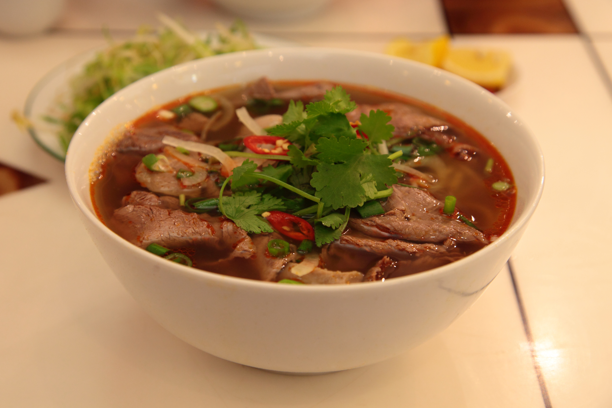
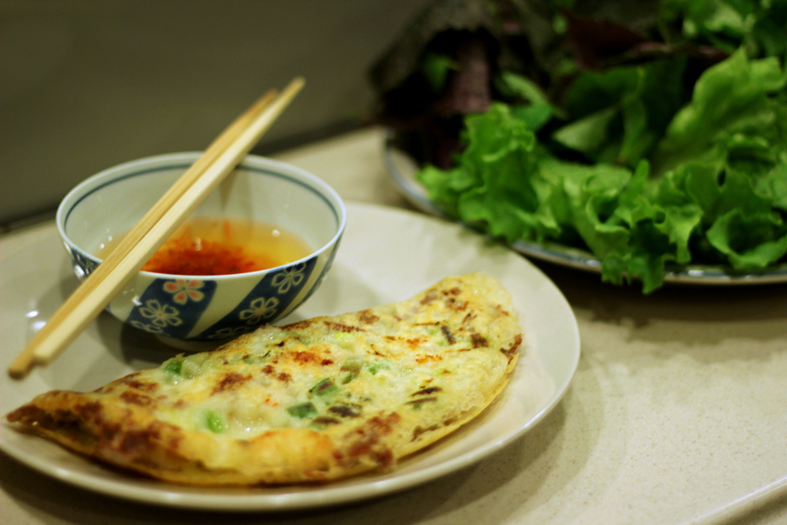

Những món ăn yêu thích của anh ấy
- Bún Bò Huế
- Bún Chả Hà Nội
- Bánh Xèo
- 1.Bún Bò Huế
- _Bún bò Huế là một trong những đặc sản của thành phố Huế.
- 2.Bún Chả Hà Nội
- _Bún chả là một món ăn của Việt Nam, món ăn xuất xứ từ miền Bắc Việt Nam
- 3.Bánh Xèo
- _Bánh xèo là một món ăn truyền thống của Việt Nam, nổi tiếng ở miền Trung và miền Nam.



Tìm hiểu thêm về Bún Bò Huế
Tìm hiểu thêm về Bánh Xèo